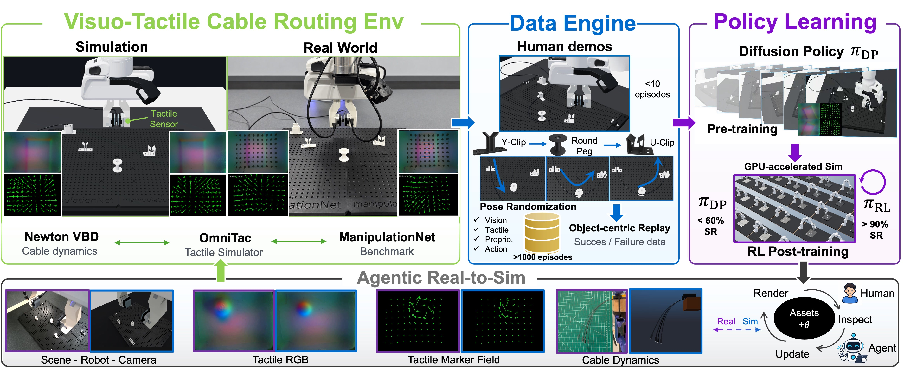
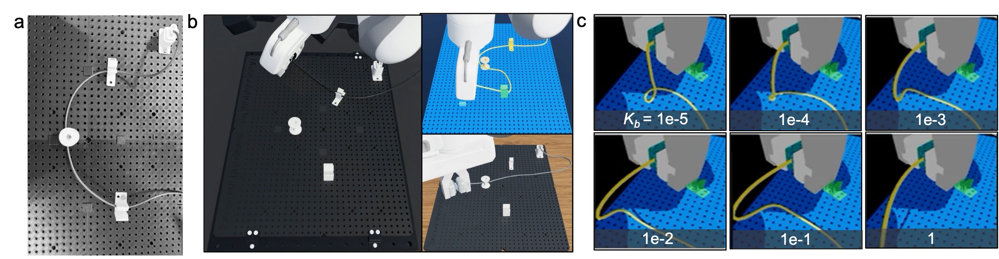
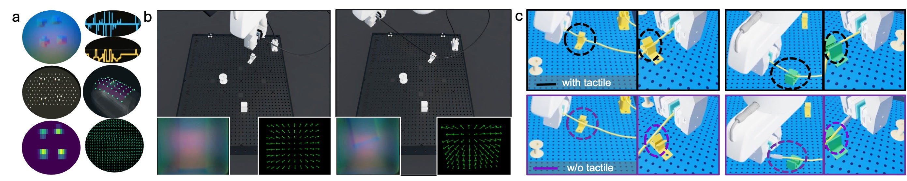
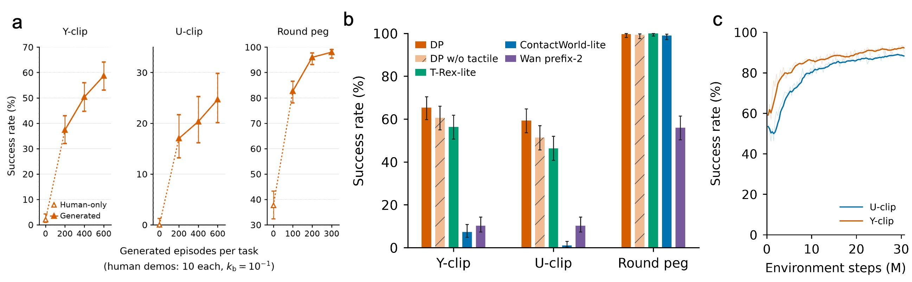
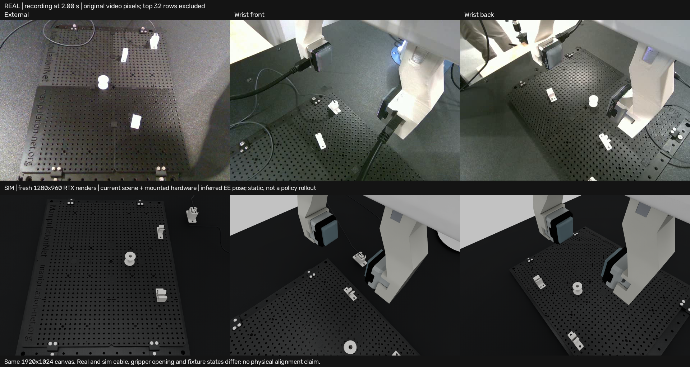

GPU-accelerated dynamics
Resolve cable bending and contact with Newton’s Vertex Block Descent solver.
Anonymous review · Supplementary material
The idea
Routing a cable demands both global shape control and precise local contact. CableTac makes it possible to study this interaction at scale: generate demonstrations in simulation, learn visuo-tactile policies, and improve them through reinforcement learning.
Cable routing requires reasoning about both global cable geometry and local contact interactions, yet collecting large-scale visuo-tactile robot data is expensive. We present CableTac, a simulation and learning framework for scalable visuo-tactile cable manipulation. CableTac combines GPU-accelerated cable dynamics, general-purpose tactile simulation, and a full-scale replica of the ManipulationNet cable-routing benchmark. A demonstration-reuse engine expands fewer than 10 human demonstrations into more than 1,000 simulated trajectories, which we use to pretrain diffusion policies before reinforcement-learning post-training. Across three routing tasks, we find that policy performance improves with increasing amounts of generated data, while the value of tactile feedback is task dependent: tactile sensing provides little benefit for unconstrained round-peg routing, but improves success by 4.7 and 8.0 percentage points for Y- and U-clip insertion, where local contact is critical. RL post-training further improves success to 88.7% and 92.0% on Y- and U-clip routing. These results establish CableTac as a scalable testbed for studying when and how tactile feedback benefits linear-deformable-object manipulation.

Visuo-tactile environment
Newton VBD cable dynamics meet OmniTac tactile sensing in a full-scale replica of the ManipulationNet cable-management benchmark: Y-clip insertion, U-clip insertion, and routing around a round peg.
Resolve cable bending and contact with Newton’s Vertex Block Descent solver.
Vary fixture pose, scene appearance, and cable bending stiffness.
Use a common geometric reference for simulation and physical calibration.

Different bending stiffnesses produce different cable shapes and deformation responses during manipulation. The comparison below illustrates this effect in simulation.
OmniTac
Contact geometry, solver-derived normal load, and history-dependent shear are reconstructed separately from the sensor response. The same interaction supports tactile RGB, force maps, contact masks, and marker displacement fields.

Data engine
Object-centric replay transfers demonstrated end-effector motions relative to the task fixture. The simulator resolves the cable’s deformation and contact history; cable configurations are not rigidly copied.
Task-relative motion
New fixture configurations
Task success + sensor validity
Only successful, sensor-valid trajectories enter imitation training. Failed rollouts remain available for diagnosis.
Policy learning
DINOv3 visual features and a shared 1D tactile CNN are fused through cross-attention. A diffusion policy learns action chunks from demonstrations; DPPO then improves task return through simulated interaction.

65.33% with touch
60.67% without touch
59.33% with touch
51.33% without touch
99.67% with touch
99.33% without touch
Touch helps most when local contact matters—not every routing task benefits equally.
Evaluated in simulation over 300 trials per task.
Pre-training compares DP, DP without touch, T-Rex-lite, ContactWorld-lite, and Wan prefix-2. DP variants and Wan use 300 trials per task; T-Rex-lite and ContactWorld-lite use 100. Lightweight baselines are adapted configurations, not reproductions of the complete published systems. Observations and controllers differ, and Wan’s Y-clip evaluation uses different seeds from DP. The comparison therefore characterizes the evaluated configurations rather than establishing a controlled ranking of the original methods. Curves show the post-training trajectory; the reported final evaluation counts above are separate.
Paired simulated routing examples contrast policies with and without tactile feedback on Y- and U-clip tasks. The upper row shows the tactile policy; the lower row shows the vision-only policy. These qualitative examples illustrate contact-sensitive behavior alongside the aggregate evaluation above.
An exploratory simulation recording shows routing skills and transitions within longer manipulation sequences, with synchronized camera views and tactile observations. The recording also includes unsuccessful outcomes, highlighting the challenge of maintaining contact across skill transitions.
Agent-assisted real-to-sim calibration
A human-supervised calibration loop aligns scene and camera geometry, tactile appearance, marker response, and cable dynamics. Real recordings constrain simulator updates, which are inspected before acceptance.
